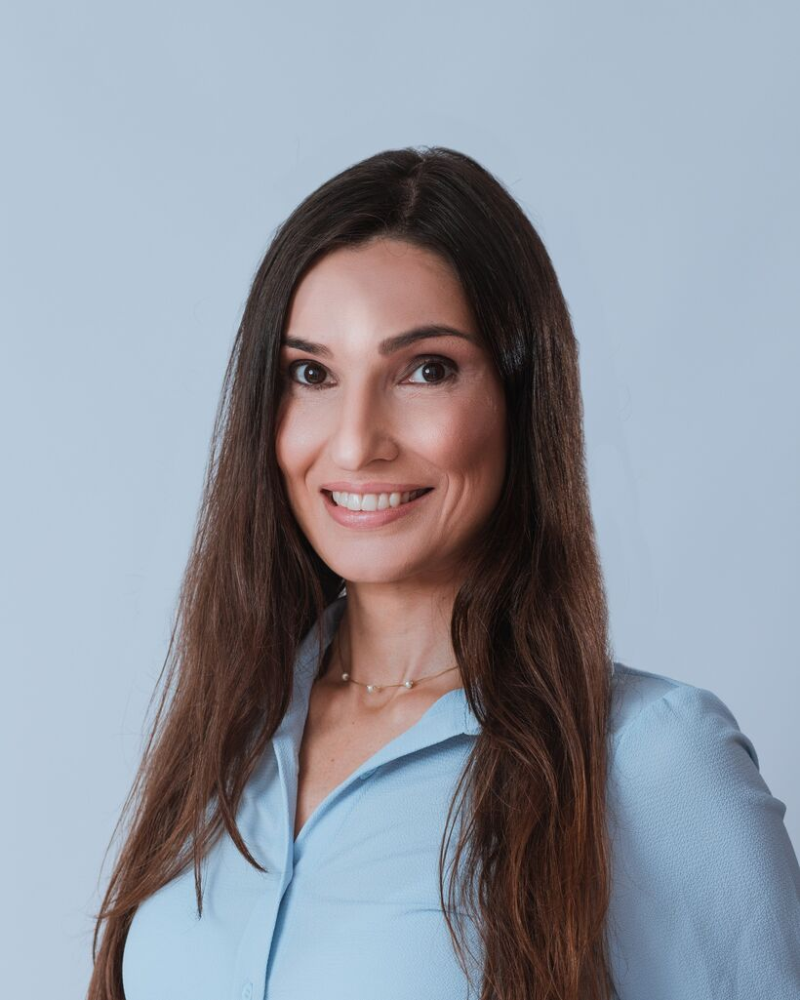

Psicóloga em Porto Alegre e online
Cuidar da mente para viver em equilíbrio.
Acompanho adolescentes e adultos que enfrentam ansiedade, fobias e dificuldades emocionais — em um espaço de escuta e acolhimento.

Virgínia BlauthPsicóloga clínica
Um espaço de escuta e acolhimento
Sou Virgínia Blauth, psicóloga (CRP 07/41396), e acompanho adolescentes e adultos que enfrentam ansiedade, fobias e dificuldades emocionais, ajudando-os a compreender suas emoções, identificar e modificar padrões de pensamento e desenvolver estratégias para lidar com os desafios da vida.
A psicoterapia também é um espaço para ampliar o autoconhecimento, fortalecer a autoestima, desenvolver habilidades emocionais e construir relacionamentos mais saudáveis.
“Cada pessoa tem uma história única. Por isso, o processo terapêutico é construído de forma individualizada.”
Um espaço de escuta e acolhimento, no qual você possa se conhecer melhor e encontrar novas maneiras de lidar com a vida.
02 — Abordagem terapêutica
Ciência e cuidado no mesmo processo.
Meu trabalho é fundamentado na Terapia Cognitivo-Comportamental (TCC), uma abordagem com ampla evidência científica para o tratamento de diferentes questões emocionais, especialmente os transtornos de ansiedade.
Também integro contribuições das Terapias Cognitivo-Comportamentais Contextuais, que propõem uma maneira diferente de se relacionar com pensamentos e emoções: em vez de tentar controlar, evitar ou eliminar tudo aquilo que causa desconforto, buscamos desenvolver uma relação mais flexível e acolhedora com nossas experiências internas, construindo uma vida orientada pelo que realmente importa.
- Terapia Cognitivo-Comportamental (TCC) Abordagem com ampla evidência científica, especialmente para o tratamento dos transtornos de ansiedade.
- Terapias Cognitivo-Comportamentais Contextuais Uma relação mais flexível e acolhedora com pensamentos e emoções, e uma vida orientada pelo que realmente importa.
“Em vez de eliminar o desconforto, construímos uma relação mais flexível com o que sentimos — e uma vida orientada pelo que importa.”
03 — Como posso ajudar
Algumas das questões que podemos trabalhar juntos.
O processo terapêutico é construído de forma individualizada, respeitando seu momento, suas necessidades e seus objetivos.
Ansiedade e preocupações
Aprender a lidar com pensamentos excessivos, antecipações negativas e dificuldades de relaxar.
02Autoconhecimento e autoestima
Compreender padrões de comportamento, desenvolver autoconfiança e construir uma relação mais saudável consigo.
03Relacionamentos e limites
Desenvolver habilidades para lidar com conflitos, estabelecer limites e construir relações mais saudáveis.
04Autocrítica e sobrecarga emocional
Reconhecer padrões de autocobrança, compreender emoções e desenvolver estratégias de enfrentamento.
05Maternidade e saúde emocional
Compreender as mudanças emocionais da gestação, lidar com expectativas e inseguranças, acolher a culpa materna e desenvolver estratégias para enfrentar os desafios do puerpério e da maternidade.
04 — Primeira sessão
Como é a primeira sessão?
A primeira sessão é um momento para nos conhecermos. Vamos conversar sobre o que motivou sua busca por terapia, suas expectativas e aspectos importantes da sua história.
E se você não souber exatamente por onde começar ou tiver dificuldade para falar sobre o que está sentindo, não se preocupe. Vou conduzir nossa conversa com acolhimento e cuidado, respeitando seu tempo e ajudando você a se sentir confortável.
Não é preciso ter todas as respostas. Podemos construir esse caminho juntos.
05 — Dúvidas frequentes
Perguntas frequentes.
Se a sua dúvida não estiver aqui, é só me chamar no WhatsApp — respondo com prazer.
Como funcionam os atendimentos?
As consultas podem ser realizadas online ou presencial em Porto Alegre, com dia e horário combinados pelo WhatsApp.
A primeira sessão já é paga ou existe uma conversa inicial?
A primeira sessão é um atendimento normal, com duração e valor habituais. Mas, antes de iniciarmos, podemos agendar uma conversa inicial gratuita de 20 minutos, para nos conhecermos, você me contar um pouco sobre o que está buscando e esclarecer suas dúvidas sobre o processo terapêutico. É só me chamar para combinarmos!
Tudo o que eu compartilhar na sessão fica em sigilo?
Sim. Tudo o que é compartilhado durante a terapia é protegido pelo sigilo profissional, conforme estabelece o Código de Ética Profissional do Psicólogo. Essa garantia se aplica tanto aos atendimentos presenciais quanto aos online.
Com que frequência são realizadas as sessões?
O acompanhamento costuma ser semanal, pois a regularidade contribui para o processo terapêutico. A frequência pode ser ajustada ao longo do acompanhamento, conforme as necessidades identificadas e a orientação profissional.
Terapia online funciona mesmo?
Sim! É possível desenvolver uma relação de confiança e realizar um trabalho terapêutico consistente também no formato online. Você pode participar das sessões de onde estiver, com privacidade e conforto, sem precisar sair de casa.
E se eu não souber o que falar na primeira sessão?
Não precisa se preocupar! É natural sentir-se um pouco inseguro no início. Vou conduzir a conversa com tranquilidade, ajudando você a se sentir à vontade. Aos poucos, vamos construindo esse espaço para que possa compartilhar o que fizer sentido para você.
Quanto tempo dura o processo terapêutico?
Algumas questões podem ser trabalhadas em um período mais curto, enquanto outras precisam de um acompanhamento contínuo. A duração depende das necessidades de cada pessoa e é avaliada ao longo do processo.
Você aceita convênio?
Não, somente particular.
06 — Material gratuito
Guia prático ACALME-SE
Uma ferramenta da Terapia Cognitivo-Comportamental (TCC) para ajudar você a lidar com momentos de ansiedade de forma mais consciente e equilibrada.
Download gratuito · PDF
Baixar o guia07 — Contato
Dê o primeiro passo. Vamos conversar.
Entre em contato para agendar um horário e conversar sobre como a terapia pode ajudar você. Atendimento online e presencial em Porto Alegre, no bairro Auxiliadora.
Sessões de 50 minutos · Semanais · Online e presencial
- Telefone
- (51) 99855-5131
- Presencial
- Rua Comendador Rheingantz, 35
Bairro Auxiliadora · Porto Alegre/RS - Online
- Videochamada, de onde você estiver
- @virginiab.psicologa